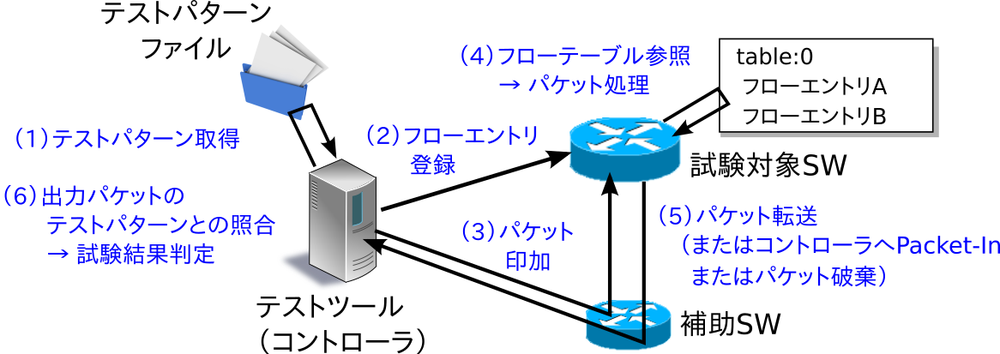
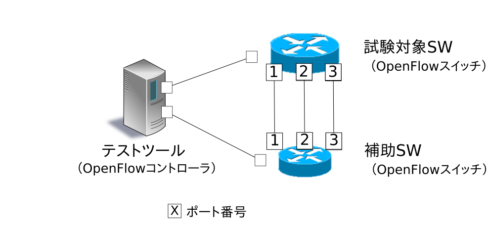
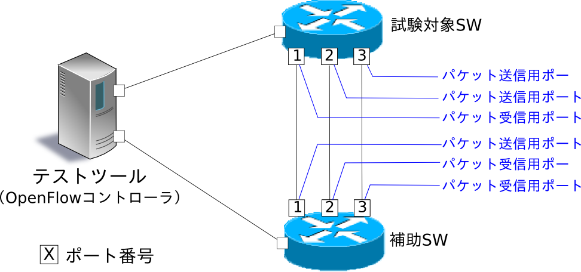
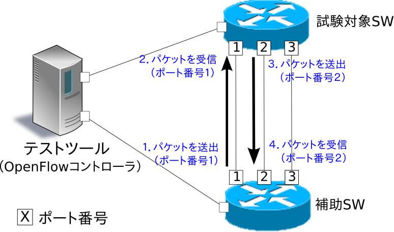
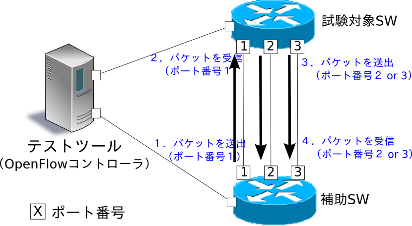

OpenFlowスイッチテストツール¶
本章では、OpenFlowスイッチのOpenFlow仕様への準拠の度合いを検証する、テストツールの使用方法を解説します。
テストツールの概要¶
本ツールは、テストパターンファイルに従って試験対象のOpenFlowスイッチに対してフローエントリやメーターエントリの登録／パケット印加を実施し、OpenFlowスイッチのパケット書き換えや転送(または破棄)の処理結果と、テストパターンファイルに記述された「期待する処理結果」の比較を行うことにより、OpenFlowスイッチのOpenFlow仕様への対応状況を検証するテストツールです。
現在、対応しているOpenFlowバージョンは、OpenFlow 1.0、OpenFlow 1.3、OpenFlow 1.4です。また、本ツールは、FlowModメッセージ、GroupModメッセージ、およびMeterModメッセージの試験に対応しています。
| 試験対象メッセージ | 対応パラメータ |
|---|---|
| FlowModメッセージ | match (IN_PHY_PORTを除く) actions (SET_QUEUEを除く) |
| MeterModメッセージ | すべて |
| GroupModメッセージ | すべて |
印加するパケットの生成やパケット書き換え結果の確認などに「パケットライブラリ」を利用しています。
試験実行イメージ¶
テストツールを実行した際の動作イメージを示します。テストパターンファイルには、「登録するフローエントリもしくはメーターエントリ」「印加パケット」「期待する処理結果」が記述されます。また、ツール実行のための環境設定については後述(テストツールの実行環境を参照)します。
{kind=link}
試験結果の出力イメージ¶
指定されたテストパターンファイルのテスト項目を順番に実行し、試験結果(OK／ERROR)を出力します。試験結果がERRORの場合はエラー詳細を併せて出力します。また、試験全体でのOK／ERROR数および発生したERRORの内訳も出力します。
--- Test start ---
match: 29_ICMPV6_TYPE
ethernet/ipv6/icmpv6(type=128)-->'icmpv6_type=128,actions=output:2' OK
ethernet/ipv6/icmpv6(type=128)-->'icmpv6_type=128,actions=output:CONTROLLER' OK
ethernet/ipv6/icmpv6(type=135)-->'icmpv6_type=128,actions=output:2' OK
ethernet/vlan/ipv6/icmpv6(type=128)-->'icmpv6_type=128,actions=output:2' ERROR
Received incorrect packet-in: ethernet(ethertype=34525)
ethernet/vlan/ipv6/icmpv6(type=128)-->'icmpv6_type=128,actions=output:CONTROLLER' ERROR
Received incorrect packet-in: ethernet(ethertype=34525)
match: 30_ICMPV6_CODE
ethernet/ipv6/icmpv6(code=0)-->'icmpv6_code=0,actions=output:2' OK
ethernet/ipv6/icmpv6(code=0)-->'icmpv6_code=0,actions=output:CONTROLLER' OK
ethernet/ipv6/icmpv6(code=1)-->'icmpv6_code=0,actions=output:2' OK
ethernet/vlan/ipv6/icmpv6(code=0)-->'icmpv6_code=0,actions=output:2' ERROR
Received incorrect packet-in: ethernet(ethertype=34525)
ethernet/vlan/ipv6/icmpv6(code=0)-->'icmpv6_code=0,actions=output:CONTROLLER' ERROR
Received incorrect packet-in: ethernet(ethertype=34525)
--- Test end ---
--- Test report ---
Received incorrect packet-in(4)
match: 29_ICMPV6_TYPE ethernet/vlan/ipv6/icmpv6(type=128)-->'icmpv6_type=128,actions=output:2'
match: 29_ICMPV6_TYPE ethernet/vlan/ipv6/icmpv6(type=128)-->'icmpv6_type=128,actions=output:CONTROLLER'
match: 30_ICMPV6_CODE ethernet/vlan/ipv6/icmpv6(code=0)-->'icmpv6_code=0,actions=output:2'
match: 30_ICMPV6_CODE ethernet/vlan/ipv6/icmpv6(code=0)-->'icmpv6_code=0,actions=output:CONTROLLER'
OK(6) / ERROR(4)
テストツールの使用方法¶
テストツールの使用方法を解説します。
テストツールの実行環境¶
テストツール実行のための環境は次のとおりです。
{kind=link}
補助スイッチとして、以下の動作を正常に行うことが出来るOpenFlowスイッチが必要です。
- actions=CONTROLLERのフローエントリ登録
- スループット計測用のフローエントリ登録
- actions=CONTROLLERのフローエントリによるPacket-Inメッセージ送信
- Packet-Outメッセージ受信によるパケット送信
注釈
Open vSwitchを試験対象スイッチとしたツール実行環境をmininet上で実現する環境構築スクリプトが、Ryuのソースツリーに用意されています。
ryu/tests/switch/run_mininet.py
スクリプトの使用例を「テストツール使用例」に記載しています。
テストツールの実行方法¶
テストツールはRyuのソースツリー上で公開されています。
ソースコード 説明 ryu/tests/switch/tester.py テストツール ryu/tests/switch/of10 テストパターンファイルのサンプル(OpenFlow1.0用) ryu/tests/switch/of13 テストパターンファイルのサンプル(OpenFlow1.3用) ryu/tests/switch/of14 テストパターンファイルのサンプル(OpenFlow1.4用) ryu/tests/switch/run_mininet.py 試験環境構築スクリプト
テストツールは次のコマンドで実行します。
$ ryu-manager [--test-switch-target DPID] [--test-switch-tester DPID]
[--test-switch-target-version VERSION] [--test-switch-tester-version VERSION]
[--test-switch-dir DIRECTORY] ryu/tests/switch/tester.py
| オプション | 説明 | デフォルト値 |
|---|---|---|
--test-switch-target |
試験対象スイッチのデータパスID | 0000000000000001 |
--test-switch-tester |
補助スイッチのデータパスID | 0000000000000002 |
--test-switch-target-version |
試験対象スイッチのOpenFlowバージョン(“openflow10”,”openflow13”,”openflow14”が指定可能) | openflow13 |
--test-switch-tester-version |
補助スイッチのOpenFlowバージョン(“openflow10”,”openflow13”,”openflow14”が指定可能) | openflow13 |
--test-switch-dir |
テストパターンファイルのディレクトリパス | ryu/tests/switch/of13 |
注釈
テストツールはRyuアプリケーションとしてryu.base.app_manager.RyuAppを継承して作成されているため、他のRyuアプリケーションと同様に–verboseオプションによるデバッグ情報出力等にも対応しています。
テストツールの起動後、試験対象スイッチと補助スイッチがコントローラに接続されると、指定したテストパターンファイルを元に試験が開始されます。接続されたスイッチのOpenFlowバージョンが指定したOpenFlowバージョンと異なる場合はその旨メッセージが表示され、正しいバージョンでの接続を待ちます。
テストツール使用例¶
サンプルテストパターンやオリジナルのテストパターンファイルを用いたテストツールの実行手順を紹介します。
サンプルテストパターンの実行手順¶
Ryuのソースツリーのサンプルテストパターン(ryu/tests/switch/of13)を用いた場合のテストツールの実行手順を示します。
注釈
Ryuのソースツリーにはサンプルテストパターンとして、FlowModメッセージのmatch／actionsに指定できる各パラメータ、ならびにMeterModメッセージの各パラメータやGroupModメッセージの各パラメータがそれぞれ正常に動作するかを確認するテストパターンファイルが、OpenFlow1.0向け、OpenFlow1.3向けとOpenFlow1.4向けに用意されています。
ryu/tests/switch/of10
ryu/tests/switch/of13
ryu/tests/switch/of14
本手順では、試験環境を試験環境構築スクリプト(ryu/tests/switch/run_mininet.py)を用いて構築することとします。このため試験対象スイッチはOpen vSwitchとなります。VMイメージ利用のための環境設定やログイン方法等は「スイッチングハブ」を参照してください。
試験環境の構築
VM環境にログインし、試験環境構築スクリプトを実行します。
ryu@ryu-vm:~$ sudo ryu/ryu/tests/switch/run_mininet.py
netコマンドの実行結果は次の通りです。
mininet> net c0 s1 lo: s1-eth1:s2-eth1 s1-eth2:s2-eth2 s1-eth3:s2-eth3 s2 lo: s2-eth1:s1-eth1 s2-eth2:s1-eth2 s2-eth3:s1-eth3
テストツール実行
テストツール実行のため、コントローラのxtermを開きます。
mininet> xterm c0
「Node: c0 (root)」のxtermから、テストツールを実行します。この際、テストパターンファイルのディレクトリとして、サンプルテストパターンのディレクトリ(ryu/tests/switch/of13)を指定します。なお、mininet環境の試験対象スイッチと補助スイッチのデータパスIDはそれぞれ–test-switch-target／–test-switch-testerオプションのデフォルト値となっているため、オプション指定を省略しています。また、試験対象スイッチと補助スイッチのOpenFlowバージョンはそれぞれ–test-switch-target-version／–test-switch-tester-versionオプションのデフォルト値となっているため、こちらもオプション指定を省略しています。
Node: c0:
root@ryu-vm:~$ ryu-manager --test-switch-dir ryu/ryu/tests/switch/of13 ryu/ryu/tests/switch/tester.py
ツールを実行すると次のように表示され、試験対象スイッチと補助スイッチがコントローラに接続されるまで待機します。
root@ryu-vm:~$ ryu-manager --test-switch-dir ryu/ryu/tests/switch/of13/ ryu/ryu/tests/switch/tester.py loading app ryu/ryu/tests/switch/tester.py loading app ryu.controller.ofp_handler instantiating app ryu/ryu/tests/switch/tester.py of OfTester target_dpid=0000000000000001 tester_dpid=0000000000000002 Test files directory = ryu/ryu/tests/switch/of13/ instantiating app ryu.controller.ofp_handler of OFPHandler --- Test start --- waiting for switches connection...
試験対象スイッチと補助スイッチがコントローラに接続されると、試験が開始されます。
root@ryu-vm:~$ ryu-manager --test-switch-dir ryu/ryu/tests/switch/of13/ ryu/ryu/tests/switch/tester.py loading app ryu/ryu/tests/switch/tester.py loading app ryu.controller.ofp_handler instantiating app ryu/ryu/tests/switch/tester.py of OfTester target_dpid=0000000000000001 tester_dpid=0000000000000002 Test files directory = ryu/ryu/tests/switch/of13/ instantiating app ryu.controller.ofp_handler of OFPHandler --- Test start --- waiting for switches connection... dpid=0000000000000002 : Join tester SW. dpid=0000000000000001 : Join target SW. action: 00_OUTPUT ethernet/ipv4/tcp-->'actions=output:2' OK ethernet/ipv6/tcp-->'actions=output:2' OK ethernet/arp-->'actions=output:2' OK action: 11_COPY_TTL_OUT ethernet/mpls(ttl=64)/ipv4(ttl=32)/tcp-->'eth_type=0x8847,actions=copy_ttl_out,output:2' ERROR Failed to add flows: OFPErrorMsg[type=0x02, code=0x00] ethernet/mpls(ttl=64)/ipv6(hop_limit=32)/tcp-->'eth_type=0x8847,actions=copy_ttl_out,output:2' ERROR Failed to add flows: OFPErrorMsg[type=0x02, code=0x00] ...ryu/tests/switch/of13配下の全てのサンプルテストパターンファイルの試験が完了すると、テストツールは終了します。
<参考>サンプルテストパターンファイル一覧¶
match／actionsの各設定項目に対応するフローエントリを登録し、フローエントリにmatchする(またはmatchしない)複数パターンのパケットを印加するテストパターンや、一定頻度以上の印加に対して破棄もしくは優先度変更を行うメーターエントリを登録し、メーターエントリにmatchするパケットを連続的に印加するテストパターン、全ポートにFLOODINGするtype=ALLのグループエントリや振り分け条件によって出力先ポートを自動的に変更するtype=SELECTのグループエントリを登録し、グループエントリにmatchするパケットを連続的に印加するテストパターンが、OpenFlow1.0用、OpenFlow1.3用とOpenFlow1.4用にそれぞれ用意されています。
OpenFlow 1.0:
ryu/tests/switch/of10/action: 00_OUTPUT.json 06_SET_NW_SRC.json 09_SET_TP_SRC_IPv6_TCP.json 01_SET_VLAN_VID.json 07_SET_NW_DST.json 09_SET_TP_SRC_IPv6_UDP.json 02_SET_VLAN_PCP.json 08_SET_NW_TOS_IPv4.json 10_SET_TP_DST_IPv4_TCP.json 03_STRIP_VLAN.json 08_SET_NW_TOS_IPv6.json 10_SET_TP_DST_IPv4_UDP.json 04_SET_DL_SRC.json 09_SET_TP_SRC_IPv4_TCP.json 10_SET_TP_DST_IPv6_TCP.json 05_SET_DL_DST.json 09_SET_TP_SRC_IPv4_UDP.json 10_SET_TP_DST_IPv6_UDP.json ryu/tests/switch/of10/match: 00_IN_PORT.json 07_NW_PROTO_IPv4.json 10_TP_SRC_IPv6_TCP.json 01_DL_SRC.json 07_NW_PROTO_IPv6.json 10_TP_SRC_IPv6_UDP.json 02_DL_DST.json 08_NW_SRC.json 11_TP_DST_IPv4_TCP.json 03_DL_VLAN.json 08_NW_SRC_Mask.json 11_TP_DST_IPv4_UDP.json 04_DL_VLAN_PCP.json 09_NW_DST.json 11_TP_DST_IPv6_TCP.json 05_DL_TYPE.json 09_NW_DST_Mask.json 11_TP_DST_IPv6_UDP.json 06_NW_TOS_IPv4.json 10_TP_SRC_IPv4_TCP.json 06_NW_TOS_IPv6.json 10_TP_SRC_IPv4_UDP.jsonOpenFlow 1.3:
ryu/tests/switch/of13/action: 00_OUTPUT.json 20_POP_MPLS.json 11_COPY_TTL_OUT.json 23_SET_NW_TTL_IPv4.json 12_COPY_TTL_IN.json 23_SET_NW_TTL_IPv6.json 15_SET_MPLS_TTL.json 24_DEC_NW_TTL_IPv4.json 16_DEC_MPLS_TTL.json 24_DEC_NW_TTL_IPv6.json 17_PUSH_VLAN.json 25_SET_FIELD 17_PUSH_VLAN_multiple.json 26_PUSH_PBB.json 18_POP_VLAN.json 26_PUSH_PBB_multiple.json 19_PUSH_MPLS.json 27_POP_PBB.json 19_PUSH_MPLS_multiple.json ryu/tests/switch/of13/action/25_SET_FIELD: 03_ETH_DST.json 14_TCP_DST_IPv4.json 24_ARP_SHA.json 04_ETH_SRC.json 14_TCP_DST_IPv6.json 25_ARP_THA.json 05_ETH_TYPE.json 15_UDP_SRC_IPv4.json 26_IPV6_SRC.json 06_VLAN_VID.json 15_UDP_SRC_IPv6.json 27_IPV6_DST.json 07_VLAN_PCP.json 16_UDP_DST_IPv4.json 28_IPV6_FLABEL.json 08_IP_DSCP_IPv4.json 16_UDP_DST_IPv6.json 29_ICMPV6_TYPE.json 08_IP_DSCP_IPv6.json 17_SCTP_SRC_IPv4.json 30_ICMPV6_CODE.json 09_IP_ECN_IPv4.json 17_SCTP_SRC_IPv6.json 31_IPV6_ND_TARGET.json 09_IP_ECN_IPv6.json 18_SCTP_DST_IPv4.json 32_IPV6_ND_SLL.json 10_IP_PROTO_IPv4.json 18_SCTP_DST_IPv6.json 33_IPV6_ND_TLL.json 10_IP_PROTO_IPv6.json 19_ICMPV4_TYPE.json 34_MPLS_LABEL.json 11_IPV4_SRC.json 20_ICMPV4_CODE.json 35_MPLS_TC.json 12_IPV4_DST.json 21_ARP_OP.json 36_MPLS_BOS.json 13_TCP_SRC_IPv4.json 22_ARP_SPA.json 37_PBB_ISID.json 13_TCP_SRC_IPv6.json 23_ARP_TPA.json 38_TUNNEL_ID.json ryu/tests/switch/of13/group: 00_ALL.json 01_SELECT_IP.json 01_SELECT_Weight_IP.json 01_SELECT_Ether.json 01_SELECT_Weight_Ether.json ryu/tests/switch/of13/match: 00_IN_PORT.json 13_TCP_SRC_IPv6.json 26_IPV6_SRC.json 02_METADATA.json 14_TCP_DST_IPv4.json 26_IPV6_SRC_Mask.json 02_METADATA_Mask.json 14_TCP_DST_IPv6.json 27_IPV6_DST.json 03_ETH_DST.json 15_UDP_SRC_IPv4.json 27_IPV6_DST_Mask.json 03_ETH_DST_Mask.json 15_UDP_SRC_IPv6.json 28_IPV6_FLABEL.json 04_ETH_SRC.json 16_UDP_DST_IPv4.json 28_IPV6_FLABEL_Mask.json 04_ETH_SRC_Mask.json 16_UDP_DST_IPv6.json 29_ICMPV6_TYPE.json 05_ETH_TYPE.json 17_SCTP_SRC_IPv4.json 30_ICMPV6_CODE.json 06_VLAN_VID.json 17_SCTP_SRC_IPv6.json 31_IPV6_ND_TARGET.json 06_VLAN_VID_Mask.json 18_SCTP_DST_IPv4.json 32_IPV6_ND_SLL.json 07_VLAN_PCP.json 18_SCTP_DST_IPv6.json 33_IPV6_ND_TLL.json 08_IP_DSCP_IPv4.json 19_ICMPV4_TYPE.json 34_MPLS_LABEL.json 08_IP_DSCP_IPv6.json 20_ICMPV4_CODE.json 35_MPLS_TC.json 09_IP_ECN_IPv4.json 21_ARP_OP.json 36_MPLS_BOS.json 09_IP_ECN_IPv6.json 22_ARP_SPA.json 37_PBB_ISID.json 10_IP_PROTO_IPv4.json 22_ARP_SPA_Mask.json 37_PBB_ISID_Mask.json 10_IP_PROTO_IPv6.json 23_ARP_TPA.json 38_TUNNEL_ID.json 11_IPV4_SRC.json 23_ARP_TPA_Mask.json 38_TUNNEL_ID_Mask.json 11_IPV4_SRC_Mask.json 24_ARP_SHA.json 39_IPV6_EXTHDR.json 12_IPV4_DST.json 24_ARP_SHA_Mask.json 39_IPV6_EXTHDR_Mask.json 12_IPV4_DST_Mask.json 25_ARP_THA.json 13_TCP_SRC_IPv4.json 25_ARP_THA_Mask.json ryu/tests/switch/of13/meter: 01_DROP_00_KBPS_00_1M.json 02_DSCP_REMARK_00_KBPS_00_1M.json 01_DROP_00_KBPS_01_10M.json 02_DSCP_REMARK_00_KBPS_01_10M.json 01_DROP_00_KBPS_02_100M.json 02_DSCP_REMARK_00_KBPS_02_100M.json 01_DROP_01_PKTPS_00_100.json 02_DSCP_REMARK_01_PKTPS_00_100.json 01_DROP_01_PKTPS_01_1000.json 02_DSCP_REMARK_01_PKTPS_01_1000.json 01_DROP_01_PKTPS_02_10000.json 02_DSCP_REMARK_01_PKTPS_02_10000.jsonOpenFlow 1.4:
ryu/tests/switch/of14/action: 00_OUTPUT.json 20_POP_MPLS.json 11_COPY_TTL_OUT.json 23_SET_NW_TTL_IPv4.json 12_COPY_TTL_IN.json 23_SET_NW_TTL_IPv6.json 15_SET_MPLS_TTL.json 24_DEC_NW_TTL_IPv4.json 16_DEC_MPLS_TTL.json 24_DEC_NW_TTL_IPv6.json 17_PUSH_VLAN.json 25_SET_FIELD 17_PUSH_VLAN_multiple.json 26_PUSH_PBB.json 18_POP_VLAN.json 26_PUSH_PBB_multiple.json 19_PUSH_MPLS.json 27_POP_PBB.json 19_PUSH_MPLS_multiple.json ryu/tests/switch/of14/action/25_SET_FIELD: 03_ETH_DST.json 14_TCP_DST_IPv6.json 26_IPV6_SRC.json 04_ETH_SRC.json 15_UDP_SRC_IPv4.json 27_IPV6_DST.json 05_ETH_TYPE.json 15_UDP_SRC_IPv6.json 28_IPV6_FLABEL.json 06_VLAN_VID.json 16_UDP_DST_IPv4.json 29_ICMPV6_TYPE.json 07_VLAN_PCP.json 16_UDP_DST_IPv6.json 30_ICMPV6_CODE.json 08_IP_DSCP_IPv4.json 17_SCTP_SRC_IPv4.json 31_IPV6_ND_TARGET.json 08_IP_DSCP_IPv6.json 17_SCTP_SRC_IPv6.json 32_IPV6_ND_SLL.json 09_IP_ECN_IPv4.json 18_SCTP_DST_IPv4.json 33_IPV6_ND_TLL.json 09_IP_ECN_IPv6.json 18_SCTP_DST_IPv6.json 34_MPLS_LABEL.json 10_IP_PROTO_IPv4.json 19_ICMPV4_TYPE.json 35_MPLS_TC.json 10_IP_PROTO_IPv6.json 20_ICMPV4_CODE.json 36_MPLS_BOS.json 11_IPV4_SRC.json 21_ARP_OP.json 37_PBB_ISID.json 12_IPV4_DST.json 22_ARP_SPA.json 38_TUNNEL_ID.json 13_TCP_SRC_IPv4.json 23_ARP_TPA.json 41_PBB_UCA.json 13_TCP_SRC_IPv6.json 24_ARP_SHA.json 14_TCP_DST_IPv4.json 25_ARP_THA.json ryu/tests/switch/of14/group: 00_ALL.json 01_SELECT_IP.json 01_SELECT_Weight_IP.json 01_SELECT_Ether.json 01_SELECT_Weight_Ether.json ryu/tests/switch/of14/match: 00_IN_PORT.json 13_TCP_SRC_IPv6.json 26_IPV6_SRC.json 02_METADATA.json 14_TCP_DST_IPv4.json 26_IPV6_SRC_Mask.json 02_METADATA_Mask.json 14_TCP_DST_IPv6.json 27_IPV6_DST.json 03_ETH_DST.json 15_UDP_SRC_IPv4.json 27_IPV6_DST_Mask.json 03_ETH_DST_Mask.json 15_UDP_SRC_IPv6.json 28_IPV6_FLABEL.json 04_ETH_SRC.json 16_UDP_DST_IPv4.json 28_IPV6_FLABEL_Mask.json 04_ETH_SRC_Mask.json 16_UDP_DST_IPv6.json 29_ICMPV6_TYPE.json 05_ETH_TYPE.json 17_SCTP_SRC_IPv4.json 30_ICMPV6_CODE.json 06_VLAN_VID.json 17_SCTP_SRC_IPv6.json 31_IPV6_ND_TARGET.json 06_VLAN_VID_Mask.json 18_SCTP_DST_IPv4.json 32_IPV6_ND_SLL.json 07_VLAN_PCP.json 18_SCTP_DST_IPv6.json 33_IPV6_ND_TLL.json 08_IP_DSCP_IPv4.json 19_ICMPV4_TYPE.json 34_MPLS_LABEL.json 08_IP_DSCP_IPv6.json 20_ICMPV4_CODE.json 35_MPLS_TC.json 09_IP_ECN_IPv4.json 21_ARP_OP.json 36_MPLS_BOS.json 09_IP_ECN_IPv6.json 22_ARP_SPA.json 37_PBB_ISID.json 10_IP_PROTO_IPv4.json 22_ARP_SPA_Mask.json 37_PBB_ISID_Mask.json 10_IP_PROTO_IPv6.json 23_ARP_TPA.json 38_TUNNEL_ID.json 11_IPV4_SRC.json 23_ARP_TPA_Mask.json 38_TUNNEL_ID_Mask.json 11_IPV4_SRC_Mask.json 24_ARP_SHA.json 39_IPV6_EXTHDR.json 12_IPV4_DST.json 24_ARP_SHA_Mask.json 39_IPV6_EXTHDR_Mask.json 12_IPV4_DST_Mask.json 25_ARP_THA.json 41_PBB_UCA.json 13_TCP_SRC_IPv4.json 25_ARP_THA_Mask.json ryu/tests/switch/of14/meter: 01_DROP_00_KBPS_00_1M.json 02_DSCP_REMARK_00_KBPS_00_1M.json 01_DROP_00_KBPS_01_10M.json 02_DSCP_REMARK_00_KBPS_01_10M.json 01_DROP_00_KBPS_02_100M.json 02_DSCP_REMARK_00_KBPS_02_100M.json 01_DROP_01_PKTPS_00_100.json 02_DSCP_REMARK_01_PKTPS_00_100.json 01_DROP_01_PKTPS_01_1000.json 02_DSCP_REMARK_01_PKTPS_01_1000.json 01_DROP_01_PKTPS_02_10000.json 02_DSCP_REMARK_01_PKTPS_02_10000.json
オリジナルのテストパターンの実行手順¶
オリジナルのテストパターンを作成してテストツールを実行する手順を示します。
例として、OpenFlowスイッチがルータ機能を実現するために必要なmatch／actionsを処理する機能を備えているかを確認するテストパターンを作成します。
1．テストパターンファイル作成
ルータがルーティングテーブルに従ってパケットを転送する機能を実現する以下のフローエントリが正しく動作するかを試験します。
match actions 宛先IPアドレス帯「192.168.30.0/24」 送信元MACアドレスを「aa:aa:aa:aa:aa:aa」に書き換え
宛先MACアドレスを「bb:bb:bb:bb:bb:bb」に書き換え
TTL減算
パケット転送
このテストパターンを実行するテストパターンファイルを作成します。
作成例を以下に示します。
注釈
テストパターンファイルの具体的な記述方法については「テストパターンファイルの記述方法」を参考ください。
ファイル名：sample_test_pattern.json
[
"sample: Router test",
{
"description": "static routing table",
"prerequisite": [
{
"OFPFlowMod": {
"table_id": 0,
"match": {
"OFPMatch": {
"oxm_fields": [
{
"OXMTlv": {
"field": "eth_type",
"value": 2048
}
},
{
"OXMTlv": {
"field": "ipv4_dst",
"mask": 4294967040,
"value": "192.168.30.0"
}
}
]
}
},
"instructions":[
{
"OFPInstructionActions": {
"actions":[
{
"OFPActionSetField":{
"field":{
"OXMTlv":{
"field":"eth_src",
"value":"aa:aa:aa:aa:aa:aa"
}
}
}
},
{
"OFPActionSetField":{
"field":{
"OXMTlv":{
"field":"eth_dst",
"value":"bb:bb:bb:bb:bb:bb"
}
}
}
},
{
"OFPActionDecNwTtl":{}
},
{
"OFPActionOutput": {
"port":2
}
}
],
"type": 4
}
}
]
}
}
],
"tests":[
{
"ingress":[
"ethernet(dst='22:22:22:22:22:22',src='11:11:11:11:11:11',ethertype=2048)",
"ipv4(tos=32, proto=6, src='192.168.10.10', dst='192.168.30.10', ttl=64)",
"tcp(dst_port=2222, option='\\x00\\x00\\x00\\x00', src_port=11111)",
"'\\x01\\x02\\x03\\x04\\x05\\x06\\x07\\x08\\t\\n\\x0b\\x0c\\r\\x0e\\x0f'"
],
"egress":[
"ethernet(dst='bb:bb:bb:bb:bb:bb',src='aa:aa:aa:aa:aa:aa',ethertype=2048)",
"ipv4(tos=32, proto=6, src='192.168.10.10', dst='192.168.30.10', ttl=63)",
"tcp(dst_port=2222, option='\\x00\\x00\\x00\\x00', src_port=11111)",
"'\\x01\\x02\\x03\\x04\\x05\\x06\\x07\\x08\\t\\n\\x0b\\x0c\\r\\x0e\\x0f'"
]
}
]
}
]
2．試験環境構築
試験環境構築スクリプトを用いて試験環境を構築します。手順はサンプルテストパターンの実行手順を参照してください。
3．テストツール実行
コントローラのxtermから、先ほど作成したオリジナルのテストパターンファイルを指定してテストツールを実行します。なお、–test-switch-dirオプションはディレクトリだけでなくファイルを直接指定することも可能です。また、送受信パケットの内容を確認するため–verboseオプションを指定しています。
Node: c0:
root@ryu-vm:~$ ryu-manager --verbose --test-switch-dir ./sample_test_pattern.json ryu/ryu/tests/switch/tester.py試験対象スイッチと補助スイッチがコントローラに接続されると、試験が開始されます。
「dpid=0000000000000002 : receive_packet...」のログ出力から、テストパターンファイルのegressパケットとして設定した、期待する出力パケットが送信されたことが分かります。なお、ここではテストツールが出力したログのみを抜粋しています。
root@ryu-vm:~$ ryu-manager --verbose --test-switch-dir ./sample_test_pattern.json ryu/ryu/tests/switch/tester.py loading app ryu/tests/switch/tester.py loading app ryu.controller.ofp_handler instantiating app ryu.controller.ofp_handler of OFPHandler instantiating app ryu/tests/switch/tester.py of OfTester target_dpid=0000000000000001 tester_dpid=0000000000000002 Test files directory = ./sample_test_pattern.json --- Test start --- waiting for switches connection... dpid=0000000000000002 : Join tester SW. dpid=0000000000000001 : Join target SW. sample: Router test send_packet:[ethernet(dst='22:22:22:22:22:22',ethertype=2048,src='11:11:11:11:11:11'), ipv4(csum=53560,dst='192.168.30.10',flags=0,header_length=5,identification=0,offset=0,option=None,proto=6,src='192.168.10.10',tos=32,total_length=59,ttl=64,version=4), tcp(ack=0,bits=0,csum=33311,dst_port=2222,offset=6,option='\x00\x00\x00\x00',seq=0,src_port=11111,urgent=0,window_size=0), '\x01\x02\x03\x04\x05\x06\x07\x08\t\n\x0b\x0c\r\x0e\x0f'] egress:[ethernet(dst='bb:bb:bb:bb:bb:bb',ethertype=2048,src='aa:aa:aa:aa:aa:aa'), ipv4(csum=53816,dst='192.168.30.10',flags=0,header_length=5,identification=0,offset=0,option=None,proto=6,src='192.168.10.10',tos=32,total_length=59,ttl=63,version=4), tcp(ack=0,bits=0,csum=33311,dst_port=2222,offset=6,option='\x00\x00\x00\x00',seq=0,src_port=11111,urgent=0,window_size=0), '\x01\x02\x03\x04\x05\x06\x07\x08\t\n\x0b\x0c\r\x0e\x0f'] packet_in:[] dpid=0000000000000002 : receive_packet[ethernet(dst='bb:bb:bb:bb:bb:bb',ethertype=2048,src='aa:aa:aa:aa:aa:aa'), ipv4(csum=53816,dst='192.168.30.10',flags=0,header_length=5,identification=0,offset=0,option=None,proto=6,src='192.168.10.10',tos=32,total_length=59,ttl=63,version=4), tcp(ack=0,bits=0,csum=33311,dst_port=2222,offset=6,option='\x00\x00\x00\x00',seq=0,src_port=11111,urgent=0,window_size=0), '\x01\x02\x03\x04\x05\x06\x07\x08\t\n\x0b\x0c\r\x0e\x0f'] static routing table OK --- Test end ---実際にOpenFlowスイッチに登録されたフローエントリは以下の通りです。テストツールによって印加されたパケットがフローエントリにmatchし、n_packetsがカウントアップされていることが分かります。
Node: s1:
root@ryu-vm:~# ovs-ofctl -O OpenFlow13 dump-flows s1 OFPST_FLOW reply (OF1.3) (xid=0x2): cookie=0x0, duration=56.217s, table=0, n_packets=1, n_bytes=73, priority=0,ip,nw_dst=192.168.30.0/24 actions=set_field:aa:aa:aa:aa:aa:aa->eth_src,set_field:bb:bb:bb:bb:bb:bb->eth_dst,dec_ttl,output:2
テストパターンファイルの記述方法¶
テストパターンファイルは拡張子を「.json」としたテキストファイルです。以下の形式で記述します。
[
"xxxxxxxxxx", # 試験項目名
{
"description": "xxxxxxxxxx", # 試験内容の説明
"prerequisite": [
{
"OFPFlowMod": {...} # 登録するフローエントリ、メーターエントリ、グループエントリ
}, # (RyuのOFPFlowMod、OFPMeterMod、OFPGroupModをjson形式で記述)
{ #
"OFPMeterMod": {...} # フローエントリで期待する処理結果が
}, # パケット転送(actions=output)の場合は
{ # 出力ポート番号に「2」を指定してください
"OFPGroupMod": {...} # グループエントリでパケット転送を行う場合は
}, # 出力ポート番号には「2」もしくは「3」を
{...} # 指定してください
],
"tests": [
{
# 印加パケット
# 1回だけ印加するのか一定時間連続して印加し続けるのかに応じて
# (A)(B)のいずれかを記述
# (A) 1回だけ印加
"ingress": [
"ethernet(...)", # (Ryuパケットライブラリのコンストラクタの形式で記述)
"ipv4(...)",
"tcp(...)"
],
# (B) 一定時間連続して印加
"ingress": {
"packets":{
"data":[
"ethernet(...)", # (A)と同じ
"ipv4(...)",
"tcp(...)"
],
"pktps": 1000, # 毎秒印加するパケット数を指定
"duration_time": 30 # 連続印加時間を秒単位で指定
}
},
# 期待する処理結果
# 処理結果の種別に応じて(a)(b)(c)(d)のいずれかを記述
# (a) パケット転送(actions=output:X)の確認試験
"egress": [ # 期待する転送パケット
"ethernet(...)",
"ipv4(...)",
"tcp(...)"
]
# (b) パケットイン(actions=CONTROLLER)の確認試験
"PACKET_IN": [ # 期待するPacket-Inデータ
"ethernet(...)",
"ipv4(...)",
"tcp(...)"
]
# (c) table-missの確認試験
"table-miss": [ # table-missとなることを期待するフローテーブルID
0
]
# (d) パケット転送(actions=output:X)時スループットの確認試験
"egress":[
"throughput":[
{
"OFPMatch":{ # スループット計測用に
... # 補助SWに登録される
}, # フローエントリのMatch条件
"kbps":1000 # 期待するスループットをKbps単位で指定
},
{...},
{...}
]
]
},
{...},
{...}
]
}, # 試験1
{...}, # 試験2
{...} # 試験3
]
印加パケットとして「(B) 一定時間連続して印加」を、期待する処理結果として「(d) パケット転送(actions=output:X)時スループットの確認試験」をそれぞれ記述することにより、試験対象SWのスループットを計測することができます。
テストパターンファイルで指定する入力/出力ポート番号の数値の意味については、「＜参考＞印加パケットの転送イメージ」を参考ください。
＜参考＞印加パケットの転送イメージ¶
試験対象SW及び補助SWのポートは以下の用途で利用します。
{kind=link}
Flow_modメッセージ/Meter_modメッセージのテストを実施する場合の印加パケットの転送イメージは以下のとおりです。
１．補助SWのパケット送信用ポート（ポート番号１）からパケットを送出
２．試験対象SWのパケット受信用ポート（ポート番号１）パケットを受信
３．試験対象SWのパケット送信用ポート１（ポート番号２）からパケットを送信
４．補助SWのパケット受信用ポート１（ポート番号２）でパケットを受信
{kind=link}
Group_modメッセージのテストを実施する場合の印加パケットの転送イメージは以下のとおりです。
１．補助SWのパケット送信用ポート（ポート番号１）からパケットを送出
２．試験対象SWのパケット受信用ポート（ポート番号１）でパケットを受信
３．試験対象SWのパケット送信用ポート１（ポート番号２）或いは、試験対象SWのパケット送信用ポート２（ポート番号３）からパケットを送信
４．補助SWのパケット受信用ポート１（ポート番号２）或いは、補助SWのパケット受信用ポート２（ポート番号３）でパケットを受信
{kind=link}
図の通り、Group_modメッセージのテストを実施するケースのみ、試験対象SWのパケット送信用ポート２及び補助SWのパケット受信用ポート２を利用する場合があります。
ポート番号の変更方法¶
用意する環境のOpenFlowスイッチのポート番号が「テストツールの実行環境」と異なる場合、テストツール実行時にオプションを指定することでテストで利用するポート番号を変更することが可能です。
ポート番号を変更するためのオプションは次のとおりです。
| オプション | 説明 | デフォルト値 |
|---|---|---|
--test-switch-target_recv_port |
試験対象スイッチのパケット受信用ポートのポート番号 | 1 |
--test-switch-target_send_port_1 |
試験対象スイッチのパケット送信用ポート１のポート番号 | 2 |
--test-switch-target_send_port_2 |
試験対象スイッチのパケット送信用ポート２のポート番号 | 3 |
--test-switch-tester_send_port |
補助スイッチのパケット送信用ポートのポート番号 | 1 |
--test-switch-tester_recv_port_1 |
補助スイッチのパケット受信用ポート１のポート番号 | 2 |
--test-switch-tester_recv_port_2 |
補助スイッチのパケット受信用ポート２のポート番号 | 3 |
本オプションによってポート番号を変更する場合には、テストパターンファイル中のポート番号の値を変更する必要がある点に注意してください。
<参考>テストパターンファイルの記述方法に関する補足¶
テストパターンファイル中のポート番号の値を指定する箇所にオプション引数の設定名を指定すると、テストツール実行時に本値がオプション引数の値に置き換わります。例えば、以下のようにテストパターンファイルを記述します。
"OFPActionOutput": { "port":"target_send_port_1" }次に、以下のようにテストツールを実行します。
root@ryu-vm:~$ ryu-manager --test-switch-target_send_port_1 30 ryu/ryu/tests/switch/tester.pyすると、テストパターンファイルの該当の箇所は、以下のように置き換わってテストツールに解釈されます。
"OFPActionOutput": { "port":30 }これによって、テストパターンファイル中のポート番号の値を、テストツール実行時に決定することが可能となります。
エラーメッセージ一覧¶
本ツールで出力されるエラーメッセージの一覧を示します。
| エラーメッセージ | 説明 |
|---|---|
| Failed to initialize flow tables: barrier request timeout. | 前回試験の試験対象SW上のフローエントリ削除に失敗(Barrier Requestのタイムアウト) |
| Failed to initialize flow tables: [err_msg] | 前回試験の試験対象SW上のフローエントリ削除に失敗(FlowModに対するErrorメッセージ受信) |
| Failed to initialize flow tables of tester_sw: barrier request timeout. | 前回試験の補助SW上のフローエントリ削除に失敗(Barrier Requestのタイムアウト) |
| Failed to initialize flow tables of tester_sw: [err_msg] | 前回試験の補助SW上のフローエントリ削除に失敗(FlowModに対するErrorメッセージ受信) |
| Failed to add flows: barrier request timeout. | 試験対象SWに対するフローエントリ登録に失敗(Barrier Requestのタイムアウト) |
| Failed to add flows: [err_msg] | 試験対象SWに対するフローエントリ登録に失敗(FlowModに対するErrorメッセージ受信) |
| Failed to add flows to tester_sw: barrier request timeout. | 補助SWに対するフローエントリ登録に失敗(Barrier Requestのタイムアウト) |
| Failed to add flows to tester_sw: [err_msg] | 補助SWに対するフローエントリ登録に失敗(FlowModに対するErrorメッセージ受信) |
| Failed to add meters: barrier request timeout. | 試験対象SWに対するメーターエントリ登録に失敗(Barrier Requestのタイムアウト) |
| Failed to add meters: [err_msg] | 試験対象SWに対するメーターエントリ登録に失敗(MeterModに対するErrorメッセージ受信) |
| Failed to add groups: barrier request timeout. | 試験対象SWに対するグループエントリ登録に失敗(Barrier Requestのタイムアウト) |
| Failed to add groups: [err_msg] | 試験対象SWに対するグループエントリ登録に失敗(GroupModに対するErrorメッセージ受信) |
| Added incorrect flows: [flows] | 試験対象SWに対するフローエントリ登録確認エラー(想定外のフローエントリが登録された) |
| Failed to add flows: flow stats request timeout. | 試験対象SWに対するフローエントリ登録確認に失敗(FlowStats Requestのタイムアウト) |
| Failed to add flows: [err_msg] | 試験対象SWに対するフローエントリ登録確認に失敗(FlowStats Requestに対するErrorメッセージ受信) |
| Added incorrect meters: [meters] | 試験対象SWに対するメーターエントリ登録確認エラー(想定外のメーターエントリが登録された) |
| Failed to add meters: meter config stats request timeout. | 試験対象SWに対するメーターエントリ登録確認に失敗(MeterConfigStats Requestのタイムアウト) |
| Failed to add meters: [err_msg] | 試験対象SWに対するメーターエントリ登録確認に失敗(MeterConfigStats Requestに対するErrorメッセージ受信) |
| Added incorrect groups: [groups] | 試験対象SWに対するグループエントリ登録確認エラー(想定外のグループエントリが登録された) |
| Failed to add groups: group desc stats request timeout. | 試験対象SWに対するグループエントリ登録確認に失敗(GroupDescStats Requestのタイムアウト) |
| Failed to add groups: [err_msg] | 試験対象SWに対するグループエントリ登録確認に失敗(GroupDescStats Requestに対するErrorメッセージ受信) |
| Failed to request port stats from target: request timeout. | 試験対象SWのPortStats取得に失敗(PortStats Requestのタイムアウト) |
| Failed to request port stats from target: [err_msg] | 試験対象SWのPortStats取得に失敗(PortStats Requestに対するErrorメッセージ受信) |
| Failed to request port stats from tester: request timeout. | 補助SWのPortStats取得に失敗(PortStats Requestのタイムアウト) |
| Failed to request port stats from tester: [err_msg] | 補助SWのPortStats取得に失敗(PortStats Requestに対するErrorメッセージ受信) |
| Received incorrect [packet] | 期待した出力パケットの受信エラー(異なるパケットを受信) |
| Receiving timeout: [detail] | 期待した出力パケットの受信に失敗(タイムアウト) |
| Failed to send packet: barrier request timeout. | パケット印加に失敗(Barrier Requestのタイムアウト) |
| Failed to send packet: [err_msg] | パケット印加に失敗(Packet-Outに対するErrorメッセージ受信) |
| Table-miss error: increment in matched_count. | table-miss確認エラー(フローにmatchしている) |
| Table-miss error: no change in lookup_count. | table-miss確認エラー(パケットが確認対象のフローテーブルで処理されていない) |
| Failed to request table stats: request timeout. | table-missの確認に失敗(TableStats Requestのタイムアウト) |
| Failed to request table stats: [err_msg] | table-missの確認に失敗(TableStats Requestに対するErrorメッセージ受信) |
| Added incorrect flows to tester_sw: [flows] | 補助SWに対するフローエントリ登録確認エラー(想定外のフローエントリが登録された) |
| Failed to add flows to tester_sw: flow stats request timeout. | 補助SWに対するフローエントリ登録確認に失敗(FlowStats Requestのタイムアウト) |
| Failed to add flows to tester_sw: [err_msg] | 補助SWに対するフローエントリ登録確認に失敗(FlowStats Requestに対するErrorメッセージ受信) |
| Failed to request flow stats: request timeout. | スループット確認時、補助SWに対するフローエントリ登録確認に失敗(FlowStats Requestのタイムアウト) |
| Failed to request flow stats: [err_msg] | スループット確認時、補助SWに対するフローエントリ登録確認に失敗(FlowStats Requestに対するErrorメッセージ受信) |
| Received unexpected throughput: [detail] | 想定するスループットからかけ離れたスループットを計測 |
| Disconnected from switch | 試験対象SWもしくは補助SWからのリンク断発生 |